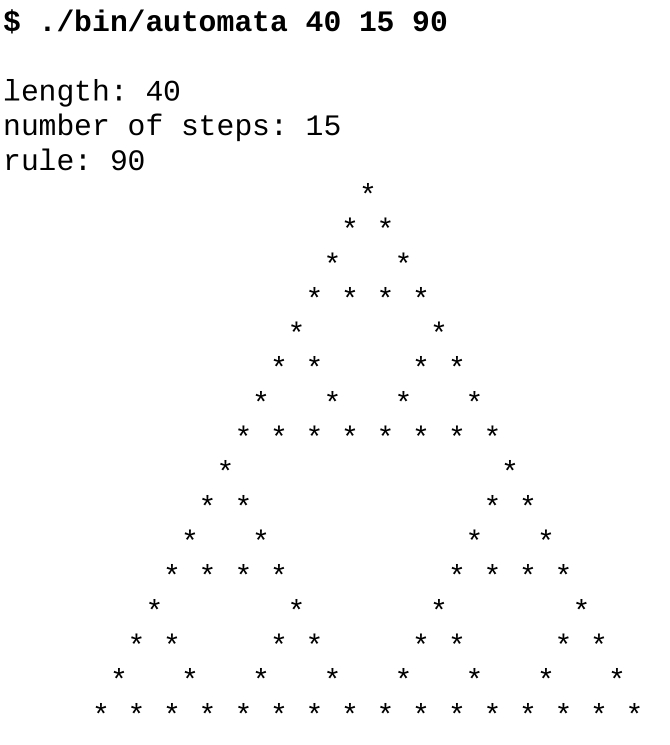
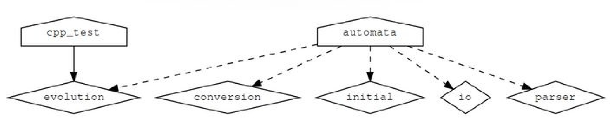

随着项目规模的增长，把所有构建逻辑都集中在一个 CMakeLists.txt 文件里，会让项目越来越难维护。接下来几篇我们讨论构建项目的策略，并限制变量的作用范围和副作用，目的是降低代码的复杂性、简化项目的维护。本文将把一个项目分割成几个范围有限的 CMakeLists.txt 文件，这些文件将使用 add_subdirectory() 命令进行处理。
注意：本文示例在 CMake 3.5 及以上版本中有效，并已在 GNU/Linux、macOS 和 Windows 上测试过。
由于我们希望展示和讨论如何组织一个复杂的项目，所以需要一个比 “hello world” 更复杂的例子：我们的代码能够计算全部 256 个基本细胞自动机，例如规则 90（Wolfram 编码）：

示例项目
示例项目的结构如下：
.
├── CMakeLists.txt
├── external
│ ├── CMakeLists.txt
│ ├── conversion.cpp
│ ├── conversion.hpp
│ └── README.md
├── src
│ ├── CMakeLists.txt
│ ├── evolution
│ │ ├── CMakeLists.txt
│ │ ├── evolution.cpp
│ │ └── evolution.hpp
│ ├── initial
│ │ ├── CMakeLists.txt
│ │ ├── initial.cpp
│ │ └── initial.hpp
│ ├── io
│ │ ├── CMakeLists.txt
│ │ ├── io.cpp
│ │ └── io.hpp
│ ├── main.cpp
│ └── parser
│ ├── CMakeLists.txt
│ ├── parser.cpp
│ └── parser.hpp
└── tests
├── catch.hpp
├── CMakeLists.txt
└── test.cpp我们将代码分成许多库来模拟真实的大中型项目：可以将源代码组织到库中，然后将库链接到可执行文件中。
项目源码
主要功能在 src/main.cpp 中：
#include "conversion.hpp"
#include "evolution.hpp"
#include "initial.hpp"
#include "io.hpp"
#include "parser.hpp"
#include <iostream>
int main(int argc, char *argv[]) {
// parse arguments
int length, num_steps, rule_decimal;
std::tie(length, num_steps, rule_decimal) = parse_arguments(argc, argv);
// print information about parameters
std::cout << "length: " << length << std::endl;
std::cout << "number of steps: " << num_steps << std::endl;
std::cout << "rule: " << rule_decimal << std::endl;
// obtain binary representation for the rule
std::string rule_binary = binary_representation(rule_decimal);
// create initial distribution
std::vector<int> row = initial_distribution(length);
// print initial configuration
print_row(row);
// the system evolves, print each step
for (int step = 0; step < num_steps; step++) {
row = evolve(row, rule_binary);
print_row(row);
}
}external/conversion.cpp 文件包含从十进制转换为二进制的代码。我们在这里模拟这段代码是由 src 外部的 “外部” 库提供的：
#include "conversion.hpp"
#include <bitset>
#include <string>
std::string binary_representation(const int decimal) {
return std::bitset<8>(decimal).to_string();
}src/evolution/evolution.cpp 文件实现系统随时间的演化：
#include "evolution.hpp"
#include <string>
#include <vector>
std::vector<int> evolve(const std::vector<int> row, const std::string rule_binary) {
std::vector<int> result;
for (auto i = 0; i < row.size(); ++i) {
auto left = (i == 0 ? row.size() : i) - 1;
auto center = i;
auto right = (i + 1) % row.size();
auto ancestors = 4 * row[left] + 2 * row[center] + 1 * row[right];
ancestors = 7 - ancestors;
auto new_state = std::stoi(rule_binary.substr(ancestors, 1));
result.push_back(new_state);
}
return result;
}src/initial/initial.cpp 文件对行进行初始化：
#include "initial.hpp"
#include <vector>
std::vector<int> initial_distribution(const int length) {
// we start with a vector which is zeroed out
std::vector<int> result(length, 0);
// more or less in the middle we place a living cell
result[length / 2] = 1;
return result;
}src/io/io.cpp 文件包含一个打印行的函数：
#include "io.hpp"
#include <algorithm>
#include <iostream>
#include <vector>
void print_row(const std::vector<int> row) {
std::for_each(row.begin(), row.end(), [](int const &value) {
std::cout << (value == 1 ? '*' : ' ');
});
std::cout << std::endl;
}src/parser/parser.cpp 文件解析命令行输入：
#include "parser.hpp"
#include <cassert>
#include <string>
#include <tuple>
std::tuple<int, int, int> parse_arguments(int argc, char *argv[]) {
assert(argc == 4 && "program called with wrong number of arguments");
auto length = std::stoi(argv[1]);
auto num_steps = std::stoi(argv[2]);
auto rule_decimal = std::stoi(argv[3]);
return std::make_tuple(length, num_steps, rule_decimal);
}最后，tests/test.cpp 包含两个使用 Catch2 库的单元测试：
#include "evolution.hpp"
// this tells catch to provide a main()
// only do this in one cpp file
#define CATCH_CONFIG_MAIN
#include "catch.hpp"
#include <string>
#include <vector>
TEST_CASE("Apply rule 90", "[rule-90]") {
std::vector<int> row = {0, 1, 0, 1, 0, 1, 0, 1, 0};
std::string rule = "01011010";
std::vector<int> expected_result = {1, 0, 0, 0, 0, 0, 0, 0, 1};
REQUIRE(evolve(row, rule) == expected_result);
}
TEST_CASE("Apply rule 222", "[rule-222]") {
std::vector<int> row = {0, 0, 0, 0, 1, 0, 0, 0, 0};
std::string rule = "11011110";
std::vector<int> expected_result = {0, 0, 0, 1, 1, 1, 0, 0, 0};
REQUIRE(evolve(row, rule) == expected_result);
}相应的头文件包含函数声明。有人可能会说，对于这个小代码示例，项目包含了太多子目录。但请注意，这只是一个项目的简化示例，真实项目通常每个库会包含许多源文件，理想情况下这些文件会被放到单独的目录中。
自底向上组织项目
让我们来详细解释一下 CMake 所需的功能。
我们可以将所有代码放到一个源文件中，不过每次编辑都需要重新编译，因此将源文件分割成更小、更易于管理的单元是有意义的。也可以将所有源代码都编译成一个库或可执行文件，但实际上项目更倾向于把源代码编译分成更小的、定义良好的库。这样做既是为了本地化和简化依赖项，也是为了简化代码维护。这意味着像本文这样由许多库构建一个项目是一种常见情况。
为了讨论 CMake 结构，我们可以从定义每个库的单个 CMakeLists.txt 文件开始，自底向上进行，例如 src/evolution/CMakeLists.txt：
add_library(evolution "")
target_sources(evolution
PRIVATE
evolution.cpp
PUBLIC
${CMAKE_CURRENT_LIST_DIR}/evolution.hpp
)
target_include_directories(evolution
PUBLIC
${CMAKE_CURRENT_LIST_DIR}
)这些单独的 CMakeLists.txt 文件定义了各个库。本例中，我们首先使用 add_library() 定义库名，然后定义它的源文件和包含目录，以及它们的目标可见性：实现文件 evolution.cpp 为 PRIVATE，而接口头文件 evolution.hpp 定义为 PUBLIC，因为我们将会在 main.cpp 和 test.cpp 中访问它。把定义写在尽可能接近代码目标的位置，好处是对该库的修改只需要变更该目录中的文件即可；换句话说，库的依赖项被封装了起来。
向上移动一层，库在 src/CMakeLists.txt 中封装：
add_executable(automata main.cpp)
add_subdirectory(evolution)
add_subdirectory(initial)
add_subdirectory(io)
add_subdirectory(parser)
target_link_libraries(automata
PRIVATE
conversion
evolution
initial
io
parser
)这些文件在主 CMakeLists.txt 中被引用，整个项目就通过这些 CMakeLists.txt 文件构建起来。这种方法对许多项目都适用，并且可以扩展到更大型的项目，而不需要用一个跨目录的全局变量来保存源文件列表。add_subdirectory() 方法的另一个好处是它隔离了作用范围，因为子目录中定义的变量在父作用域中无法访问。
使用 add_subdirectory() 调用树构建项目的一个限制是，CMake 不允许将 target_link_libraries() 与定义在当前目录范围之外的目标一起使用。对本示例来说这不是问题。下一篇我们将演示另一种方法：不使用 add_subdirectory()，而是使用模块 include 来组装不同的 CMakeLists.txt 文件，它允许我们链接到当前目录之外定义的目标。
依赖关系图可视化
CMake 可以使用 Graphviz 图形可视化软件生成项目的依赖关系图：
$ cd build
$ cmake --graphviz=example.dot ..
$ dot -T png example.dot -o example.png生成的图表将显示不同目录下的目标之间的依赖关系：

防止源内构建
到目前为止，我们都是在源代码目录之外构建代码，以保持源代码树和构建树分离。这是推荐的方式，它允许我们使用相同的源代码配置不同的构建（串行的或并行的、Debug 或 Release），而不需要复制源代码，也不会在源代码树中生成目标文件。使用以下代码片段，可以保护您的项目免受源内构建的影响：
if(${PROJECT_SOURCE_DIR} STREQUAL ${PROJECT_BINARY_DIR})
message(FATAL_ERROR "In-source builds not allowed. Please make a new directory (called a build directory) and run CMake from there.")
endif()认识到构建结构与源结构类似很有用。本例中，在 src/CMakeLists.txt 中插入一条 message 打印输出：
message("current binary dir is ${CMAKE_CURRENT_BINARY_DIR}")在 build 下构建项目时，我们将看到打印输出 build/src。
CMake 3.12 中的 OBJECT 库
在 CMake 的 3.12 版本中，OBJECT 库是组织大型项目的另一种可行方式。对我们的示例来说，唯一的修改是在库的 CMakeLists.txt 中：源文件将被编译成目标文件，既不存档到静态库中，也不链接到动态库中。例如：
add_library(io OBJECT "")
target_sources(io
PRIVATE
io.cpp
PUBLIC
${CMAKE_CURRENT_LIST_DIR}/io.hpp
)
target_include_directories(io
PUBLIC
${CMAKE_CURRENT_LIST_DIR}
)主 CMakeLists.txt 保持不变，automata 可执行目标会将这些目标文件链接到最终的可执行文件中。使用时也有需要注意的地方，例如在对象库上设置的目录、编译标志和链接库将被正确地继承。有关 CMake 3.12 中引入的对象库新特性的更多细节，可以进一步查阅 CMake 官方文档。